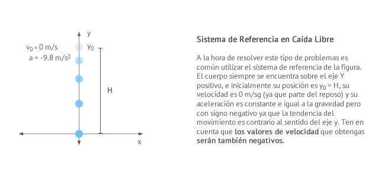

La conversión de unidades es la transformación de una cantidad, expresada en un cierta unidad de medida, en otra equivalente, que puede ser del
mismo sistema de unidades o no.
Este proceso suele realizarse con el uso de los factores de conversión y las tablas de conversión.
Frecuentemente basta multiplicar por una fracción (factor de conversión) y el resultado es otra medida equivalente, en la que han cambiado las
unidades. Cuando el cambio de unidades implica la transformación de varias unidades se pueden utilizar varios factores de conversión uno tras otro,
de forma que el resultado final será la medida equivalente en las unidades que buscamos, por ejemplo si queremos pasar 8 metros a yardas, lo único
que tenemos que hacer es multiplicar 8 x (0.914)=7.312 yardas.
Alguna equivalencia
1 m = 100 cm
1 m = 1000 mm
1 cm = 10 mm
1 km = 1000 m
1 m = 3.28 pies
1 m = 0.914 yardas
1 pie = 30.48 cm
1 pie = 12 pulgadas
1 pulgada = 2.54 cm
1 milla = 1.609 km
1 libra = 454 gramos
1 kg = 2.2 libras
1 litro = 1000 Cm3
1 hora = 60 minutos
1 hora = 3600 segundos
CAIDA LIBRE DE LOS CUERPOS
En la caída libre un objeto cae verticalmente desde cierta altura H despreciando cualquier tipo de rozamiento con el aire o cualquier otro obstáculo.
Se trata de un movimiento rectilíneo uniformemente acelerado (m.r.u.a.) o movimiento rectilíneo uniformemente variado (m.r.u.v.) en el que la aceleración coincide con
el valor de la gravedad. En la superficie de la Tierra, la aceleración de la gravedad se puede considerar constante, dirigida hacia abajo, se designa por la letra g y
su valor es de 9'8m/s2 (a veces se aproxima por 10 m/s2).
Para estudiar el movimiento de caída libre normalmente utilizaremos un sistema de referencia cuyo origen de coordenadas se encuentra en el pie de la vertical del punto
desde el que soltamos el cuerpo y consideraremos el sentido positivo del eje y apuntando hacia arriba, tal y como puede verse en la figura:

SEGUNDA LEY DE NEWTON
La Segunda Ley de Newton, también conocida como Ley Fundamental de la Dinámica, es la que determina una relación proporcional entre fuerza y variación de la cantidad
de movimiento o momento lineal de un cuerpo. Dicho de otra forma, la fuerza es directamente proporcional a la masa y a la aceleración de un cuerpo.
Una buena explicación para misma es que establece que siempre que un cuerpo ejerce una fuerza sobre un segundo cuerpo, el segundo cuerpo ejerce una fuerza sobre el
primero cuya magnitud es igual, pero en dirección contraria a la primera. También podemos decir que la segunda ley de Newton responde la pregunta de lo que le sucede
a un objeto que tiene una fuerza resultante diferente de cero actuando sobre el.